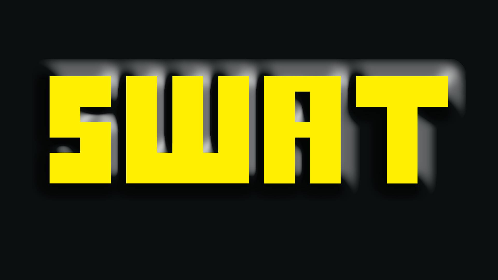

System, Web, Application Technics
Open Source Solutions for Everyday Life
Wie we zijn
SWAT is een onafhankelijk initiatief dat gelooft in betaalbare, efficiënte en duurzame technologie.
Wij werken niet voor grote merken. Wij kiezen voor materialen en oplossingen die écht prijs/kwaliteit bieden.
Onze visie
De computer is vandaag even onmisbaar als water of elektriciteit.
Toch vragen bedrijven vaak honderden euro’s
voor softwarelicenties
en dwingen ze gebruikers om om de paar jaar nieuwe hardware aan te kopen.
Daardoor blijven veel mensen en kleine zelfstandigen
werken met verouderde of slecht beveiligde systemen.
SWAT gelooft dat dit niet meer van deze tijd is.
Daarom kiezen wij voor open source software en geven we oudere toestellen een nieuw leven,
zodat ze opnieuw geschikt zijn voor alledaags gebruik
zonder verborgen kosten.
Waarom kiezen voor SWAT?
Geen verborgen licentiekosten → software is gratis.Hardware gaat langer mee → minder afval, meer duurzaamheid.
Betaalbare prijzen.
Transparant → je betaalt voor materiaal en werk, niets meer.
Roadmap
SWAT is ontstaan vanuit één duidelijk idee:
mensen opnieuw controle geven over hun eigen digitale wereld.
Vandaag worden we steeds afhankelijker van technologie, terwijl de kosten blijven stijgen.
Tegelijk verliezen we steeds meer controle over onze eigen toestellen en hoe we die mogen/kunnen gebruiken.
We leven in een systeem waarin grote bedrijven domineren, gebruikers richting consumptie duwen
en hun data inzetten via advertenties en tracking.
Jaarlijkse antivirusbetalingen, softwarelicenties, abonnementen en verplichte upgrades maken digitale toegang
voor veel mensen onnodig duur.
SWAT wil daar een betaalbaar en eerlijk alternatief tegenover zetten.
Ons doel is om systemen op te bouwen die blijven werken,
software aan te bieden die gratis blijft updaten,
en klanten enkel te laten betalen voor de installatie, ondersteuning en eventuele hardware.
Dit zo reclame-vrij als mogelijk waarbij privacy van de klant op de eerste plaats komt.
Om dit project verder uit te bouwen, onderzoeken we momenteel
welke ideeën en diensten mensen het meest aanspreken.
Wil je mee nadenken?
Bekijk dan gerust onze
research surveypage
Wie weet komt jou idee wel mee op de markt?
Daarnaast onderzoeken we ook hoe SWAT kan doorgroeien naar een zelfstandig project in bijberoep.
Daarom zijn we op zoek naar mensen die geloven in deze visie en het project mee willen steunen.
Er wordt geen geld gevraagd.
Enkel uw steun om het woord verder te verspreiden.
Find me here!